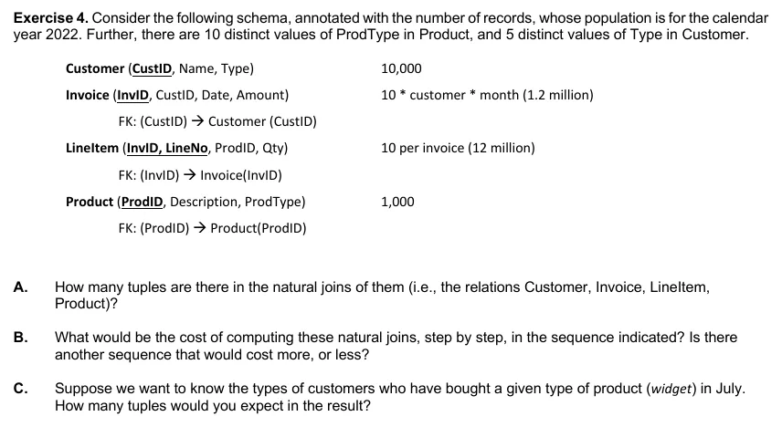
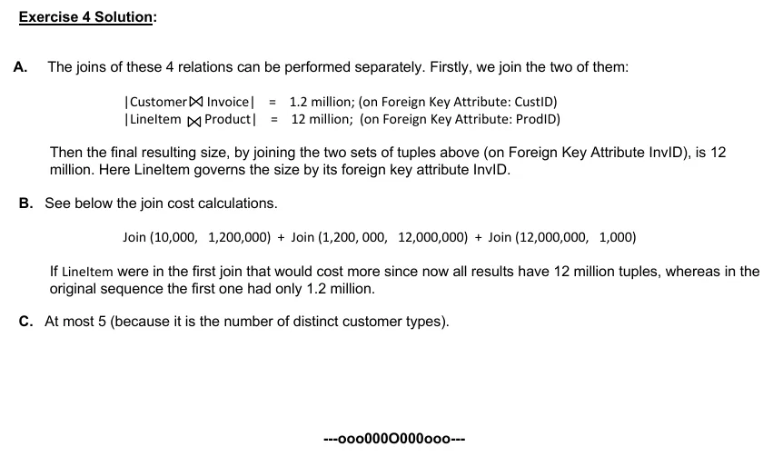
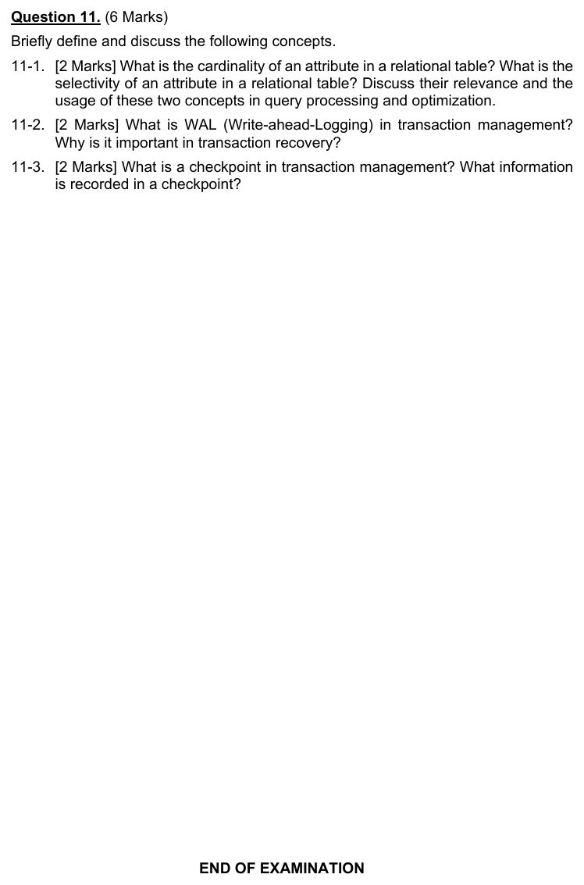
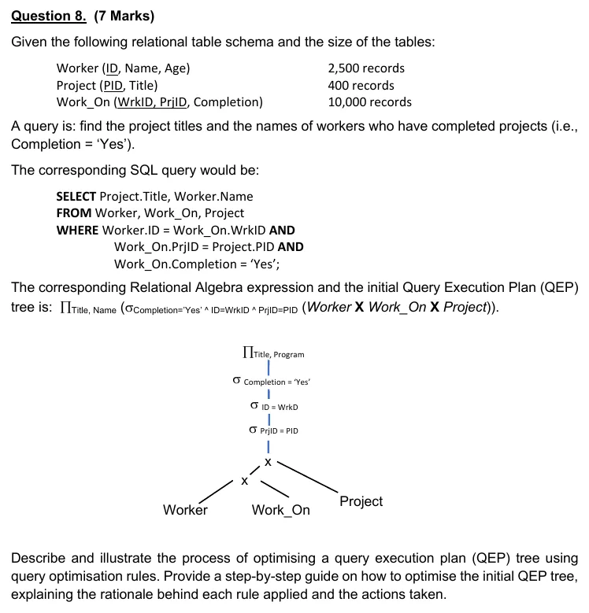
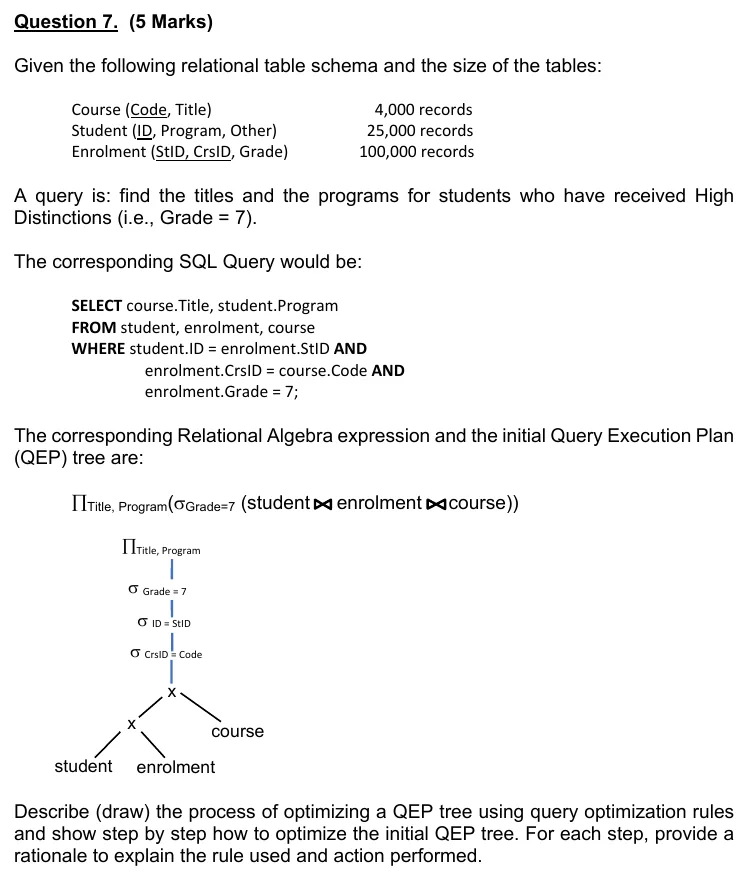
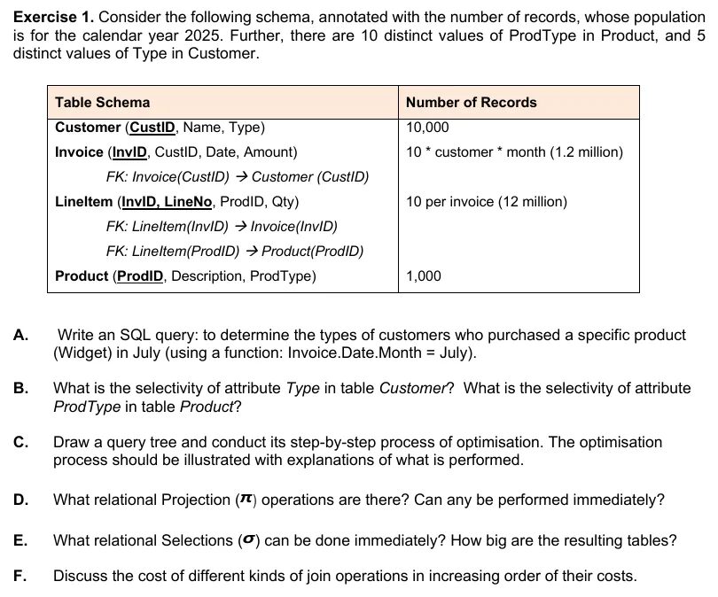
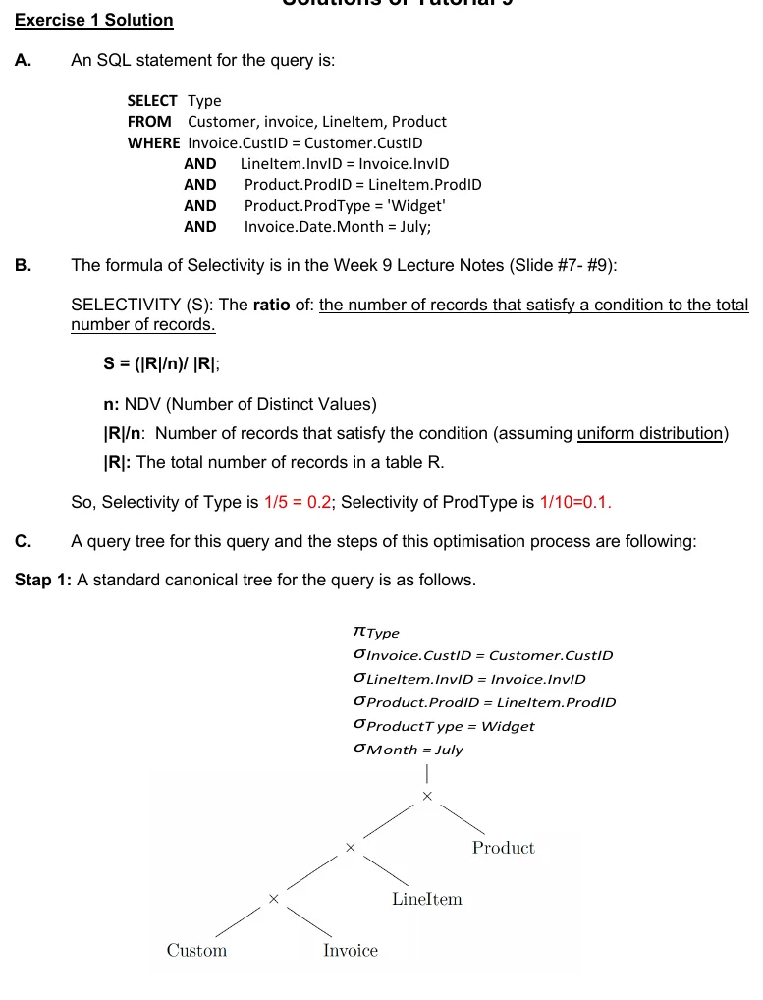

第 5 章 · WEEKS 8–9 · QUERY PROCESSING AND OPTIMISATION
查询处理与优化：selectivity、成本和 QEP
Week 8 和 Week 9 两节课：一句 SQL 在内部怎么执行，怎么估算代价，怎么把查询树一步步优化。
1 一句 SQL 是怎么被执行的
SQL 只说“要什么”，不说“怎么做”。DBMS 拿到 SQL 后分三步：
- SQL Parser：检查语法，把 SQL 翻译成内部形式，也就是 relational algebra（RA）表达式。
- Query Execution Planner（optimizer）：同一个查询有很多种等价的 RA 写法，执行起来快慢差别很大。Optimizer 从中挑一个好的，叫 Query Execution Plan（QEP）。
- Query Executor：按 QEP 去读数据，返回结果。
这两周课件从头到尾用同一个例子：
Student (ID, Program, Other) 25,000 条
Course (Code, Title) 4,000 条
Enrolment (StID, CrsID, Grade) 100,000 条
查询：找出拿到 Grade 7 的学生的 Program 和对应课程的 Title
SELECT course.Title, student.Program
FROM student, course, enrolment
WHERE enrolment.StID = student.ID AND
enrolment.CrsID = course.Code AND
enrolment.Grade = 7;
RA 里三个基本运算：σ（selection，选行，对应 WHERE 的条件）、π（projection，选列，对应 SELECT 后面的列）、⋈（join，连接）。RA 的细节在下一章。

2 三种运算各有多贵
代价用要处理的 tuple 数来估计。设表有 N 行：
| 运算 | 代价 | N = 1,000 时 | 说明 |
|---|---|---|---|
| Selection σ | N（线性扫描）；有序或有索引时是 log N | 1,000 | 便宜 |
| Projection π | N × (1 + log N) | 4,000 | 要排序去重，贵 |
| Join ⋈（sort-merge） | N(1 + log N) + M(1 + log M) | 8,000（M 也是 1,000） | 两张表各排序再合并，很贵 |
| Cartesian product × | N × M | 1,000,000 | 最贵，要避免 |
上表的数字是课件用 log10 算的。结论（课件第 24 页）：Selection 比 Projection 和 Join 便宜得多；Projection 和 Join 的代价增长得比行数快。
细化讲解
Selection 的实现方式（课件第 12 页）
简单条件（如 σSalary = 40,000）：linear search（代价 N）、binary search（log2 N）、用 primary index 或 hash key、用 clustering index 取多条记录、用 secondary index（B+-tree）。复合条件（如 Salary > 40,000 AND Car_Owner = Yes）：用其中一个条件的索引、用 composite index、或者分别用索引取出记录指针再求交集。
三种 Join 算法（课件第 14–22 页）
- Nested-loop join：对 R 的每条记录，把 S 从头到尾扫一遍，逐条比较。最慢。
- Single-loop join：S 的连接属性上有索引时用。对 R 的每条记录，拿它的值去 S 的索引里查（probe）。只有一层循环。
- Sort-merge join：R 和 S 都按连接属性排好序。两个指针 r、s 各指一张表的开头：r < s 就把 r 往前移；r > s 就把 s 往前移；r = s 就输出这一对，再移 s。直到一张表走完。
Tutorial 9 Exercise 1 F 问“按代价从小到大排列各种 join”，可以答：有索引的 single-loop join 最便宜，其次 sort-merge join，nested-loop join 更贵，Cartesian product 最贵。
3 同一个查询，两种做法差多少
假设 5% 的 enrolment 是 Grade 7。
做法一：先连接，最后才筛选 πTitle,Program(σGrade=7(student ⋈ enrolment ⋈ course))
| 步骤 | 结果行数 | 课件给的代价 |
|---|---|---|
| T1 ← student ⋈ enrolment | 100,000 | 2,158,162 |
| T2 ← T1 ⋈ course | 100,000 | 1,818,694 |
| T3 ← σGrade=7 T2 | 5,000 | 100,000 |
| Result ← πTitle,Program T3 | 5,000 | 66,649 |
| 合计 | 约 4.143 million | |
做法二：先筛选，再连接 πTitle,Program(πCrsID,Program(student ⋈ σGrade=7 enrolment) ⋈ course)
| 步骤 | 结果行数 | 课件给的代价 |
|---|---|---|
| T1 ← σGrade=7 enrolment | 5,000 | 100,000 |
| T2 ← student ⋈ T1 | 5,000 | 458,145 |
| T3 ← πCrsID,Program T2 | 5,000 | 66,650 |
| T4 ← T3 ⋈ course | 5,000 | 52,000 |
| Result ← πTitle,Program T4 | 5,000 | 66,650 |
| 合计 | 743,445 | |
只是把便宜的 σ 提到前面，把 100,000 行先减到 5,000 行，总代价就降到原来的不到五分之一。这就是后面“selection 下推”规则的来历。
细化讲解
说明我用课件的公式 join(N, M) = N(1 + log2 N) + M(1 + log2 M) 重算：join(25,000; 100,000) ≈ 2,151,205，join(100,000; 4,000) ≈ 1,812,827，join(25,000; 5,000) ≈ 456,680，和课件的数字相差不到 1%，应该是取整方式不同。但 join(5,000; 4,000) 我算出来约 118,302，课件写的是 52,000，对不上。考试如果让你算，写出公式和代入过程，结论（做法二便宜得多）不受影响。
Tutorial 8 Exercise 4：估算连接结果的大小

官方答案Tutorial 8 Exercise 4 Solution

讲解：A：Customer ⋈ Invoice 的大小由外键一侧的 Invoice 决定，1.2 million；LineItem ⋈ Product 由 LineItem 决定，12 million；再把两者连起来还是 12 million。B：代价是三次 join 之和，先连小的更便宜；如果第一步就把 LineItem 拉进来，之后每一步的中间结果都是 12 million 行，更贵。C：结果只输出 customer 的 Type，Type 只有 5 个不同的值，所以最多 5 行。
4 两种优化方法
- Cost-based（deterministic）：把所有可能的执行计划列出来，估算每一个的代价，选最小的。
- Rule-based（heuristics）：用经验规则（rules of thumb）找一个好的计划，避开差的。
多数 DBMS 偏向 rule-based，因为在执行之前估算每个计划的代价本身就有开销（课件第 25 页的总结）。经验规则就是把上一节的结论一般化：
- Selection 便宜，而且能减少行数 → 尽早做，在树里尽量往下推。
- Projection 贵，但能减少列 → 也尽量往下推。
- Join 贵 → 放到最后；先做涉及小表的 join。
- 避免 Cartesian product。
5 Cardinality 和 Selectivity
Cardinality（一个 attribute 的）：这一列有多少个不同的值，NDV（number of distinct values）。例如 Name 几乎每行都不同，cardinality 很高；Car_Owner 只有 Yes、No，cardinality 是 2。
Selectivity（一个查询条件的）：满足条件的记录数 ÷ 总记录数，在 0 到 1 之间。
| 条件 | Selectivity S | 例子 |
|---|---|---|
| key 上的等值条件 | 1 / |R| | σESSN=13455673：只有 1 条满足 |
| 有 n 个不同值的 attribute 上的等值条件（假设均匀分布） | 1 / n | Car_Owner 有 2 个值，S = 1/2；type 有 4 个值，S = 1/4 |
满足条件的记录数估计为 |R| × S。例如 200 万部电影，S = 0.1，约 20 万条。
它们在查询优化里的用处：
- 做 Selection：先用 strongly selective 的条件。课件的例子：200 万部电影里，Drama 有 50 万部，Nicole Kidman 演的只有 79 部。应该先取出 Nicole Kidman 的 79 部，再看其中哪些是 Drama。
- 做 Projection：先处理 weakly selective（不同值少）的 attribute。因为 projection 要去重，不同值少，去重后的结果就小。
AI 讲解，非官方2023 Q11-1：cardinality 和 selectivity 的定义与用途

The cardinality of an attribute is its number of distinct values (NDV). The selectivity of an attribute (of a search condition on it) is the ratio of the number of records that satisfy the condition to the total number of records; it is between 0 and 1. For an equality condition on an attribute with n distinct values (uniform distribution), S = 1/n; on a key, S = 1/|R|. So an attribute with high cardinality is highly selective.
Usage: these statistics are stored in the system catalog and used by the query optimizer to estimate the sizes of intermediate results (|R| × S) and to choose the best query execution plan. Selections on strongly selective attributes should be done first because they produce small tables; projections on weakly selective attributes produce small tables. Selectivity also helps decide which index to use.
细化讲解
System catalogue（data dictionary）里存着优化要用的信息：schema（包括 view 的定义）、key 和 foreign key、表的大小、attribute 的 cardinality、selectivity 的直方图（histogram）、有哪些索引。直方图记录实际分布，比“假设均匀分布”更准。
DBMS 怎么知道 selectivity？设计者声明了 key；不同值少的 attribute 通常来自固定列表；有些 attribute 是外键；DBMS 也可以在执行 selection 或 projection 时顺便统计。
6 RA 的等价变换规则
优化之所以可行，是因为 RA 有一套改写规则，改写前后结果相同（课件第 14 页）：
| 规则 | 写法 | 用在哪 |
|---|---|---|
| σ 可以拆开（cascade） | σc1 ∧ c2(R) = σc1(σc2(R)) | 把 WHERE 里用 AND 连起来的条件拆成一个个 σ，才能分别下推 |
| σ 可以交换 | σc1(σc2(R)) = σc2(σc1(R)) | 调整 σ 的先后 |
| ⋈ 可以交换 | A ⋈ B = B ⋈ A | 调整 join 的顺序（Rule 3） |
| ⋈ 可以结合 | (A ⋈ B) ⋈ C = A ⋈ (B ⋈ C) | |
| σ 可以分配到 ⋈ 里 | σP(A ⋈ B) = σP1(A) ⋈ σP2(B) | Selection 下推（Rule 1） |
| π 可以复制到 ⋈ 下面 | πC(A ⋈ B) = πC(πCX(A) ⋈ πCY(B)) | Projection 下推（Rule 4） |
还有一条贯穿始终：join 等价于在 Cartesian product 上做 selection，σ条件(A × B) = A ⋈条件 B。
细化讲解
Tutorial 8 Exercise 1：哪些变换是合法的
R(A, B, C, D)，S(D, E, F)，⋈ 是在 D 上的 natural join。官方答案（Tut08-QP-2026.pdf 第 4 页）：
- A. πA,B(πA,B,C,D(R ⋈ S)) = πA,B(R ⋈ S)：Valid。
- B. σA>15 or B<10 or C=20(R) = σA>15(σB<10(σC=20(R)))：Invalid。只有 AND 才能拆成嵌套的 σ；这里是 OR，嵌套会把只满足其中一个条件的行筛掉。
- C. πA,B(σC<12(R)) = σC<12(πA,B(R))：Invalid。先投影就把 C 丢了，后面没法按 C 筛选。
- D. πA,F(R ⋈ S) = πA(R) ⋈ πF(S)：Invalid。投影把连接要用的 D 丢了。
C 和 D 告诉你 Rule 4 的要点：往下推 π 时，必须保留上面还要用的列（筛选条件里的列、连接条件里的列）。
其他化简（课件第 15–16 页）
R ∪ R = R，R ∩ R = R，R ⋈ R = R，R − R = ∅，R ∪ ∅ = R，R ∩ ∅ = ∅。σ 可以分配到 ∪、∩ 上：σC(R ∪ S) = σC(R) ∪ σC(S)。
CNF（conjunctive normal form）：若干项用 AND 连接，每一项内部用 OR，例如 (program = 'BIT' ∨ mark > 50) ∧ course_no = 'INFS2200'。DNF（disjunctive normal form）：若干项用 OR 连接，每一项内部用 AND。两者可以用 De Morgan 定律互相转换。
7 QEP 树的优化：四条规则（必考）
考题给你 SQL 和初始的树，要你一步步画出优化过程，每一步写出用的规则和理由。先看初始树（canonical tree）怎么来的：
- SELECT 后面的列 → 最顶上的 π。
- WHERE 里每个条件 → 一个 σ，叠在一起。
- FROM 里的表 → 用 ×（Cartesian product）连起来，放在最下面。
树是从下往上执行的，所以越靠下的运算越早做。
| 规则 | 做什么 | 理由 |
|---|---|---|
| Rule 1 Push down selections | 每个 σ 尽量往下推：只涉及一张表的条件（Grade = 7）推到那张表的正上方；连接条件推到刚好包含两张表的那个 × 上方 | Selection 便宜，尽早减少行数。先做最有限制性的 selection |
| Rule 2 Turn × into ⋈ | × 上方紧挨着连接条件的 σ，把两者合并成一个 ⋈ | Join 比“先做 Cartesian product 再筛选”便宜得多 |
| Rule 3 Most restrictive join first | 调整 join 的顺序，让结果小的 join 先做（放在下面） | 中间结果越小，后面的 join 越便宜。课件：course 有 4,000 行，少于 student 的 25,000 行，所以先和 course 连接 |
| Rule 4 Push down projections | 在每张表（或中间结果）上方加 π，只留下最终要输出的列和后面连接要用的列 | 去掉用不到的列，减小中间结果 |
课件例题一步步重放（也是 2024 Q7）
最后一步得到的表达式和课件第 22 页的 Final optimized QEP 一致（工具的输出已用程序和课件核对）：
π Title,Program ( π StID,Title ( π StID,CrsID ( σ Grade=7 (enrolment) ) ⋈ CrsID=Code course ) ⋈ StID=ID π ID,Program (student) )
细化讲解
Rule 4 里每个 π 留哪些列
- enrolment 筛选之后：Grade 已经用完，只留 StID（后面和 student 连接要用）和 CrsID（和 course 连接要用）。
- course：只有 Code 和 Title 两列，两列都要用，所以不需要加 π（课件图里把 πTitle,Code 写在括号里，表示可有可无）。
- 和 course 连接之后：CrsID、Code 已经用完，留 StID（还要连接）和 Title（最终输出）。
- student：Other 用不到，留 ID（连接）和 Program（输出）。
检查方法：每个 π 留的列 = 最终要输出的列 + 它上方还没做的连接要用的列。
课件第 23 页的流程总结
- 把 SQL 转成 canonical RA 表达式和初始树（多个表用 × 连起来）。
- 下推 selection（Rule 1）；有些 × 会变成 ⋈（Rule 2）；多个表连接时用二元 join，先做最 selective 的。
- 用约束和常量化简（Rule 3）。
- 下推 projection（Rule 4）。
- 其他优化策略，例如公共子表达式。
8 真题：2024 Q7 和 2025 Q8

2024 Q7 就是课件原例（上一节的重放）。2025 Q8 换成了 Worker（2,500）、Project（400）、Work_On（10,000），结构完全相同。答题页给了四个 “Rule:” 的格子和一个 “The Final QEP Tree”。
AI 讲解，非官方2025 Q8 的四步（程序按课件的四条规则生成）
每一格里要写的理由：
- Rule 1：σCompletion='Yes' 只涉及 Work_On，推到 Work_On 正上方，尽早减少行数；两个连接条件各自推到对应的 × 上方。
- Rule 2：σID=WrkID 和它下面的 × 合并成 ⋈ID=WrkID；σPrjID=PID 同理。Join 比 Cartesian product 便宜。
- Rule 3：Project 只有 400 行，少于 Worker 的 2,500 行，所以筛选后的 Work_On 先和 Project 连接，再和 Worker 连接。
- Rule 4：Work_On 筛选后只留 WrkID、PrjID；和 Project 连接后留 WrkID、Title；Worker 只留 ID、Name（去掉 Age）。
最终表达式：
π Title,Name ( π WrkID,Title ( π WrkID,PrjID ( σ Completion='Yes' (Work_On) ) ⋈ PrjID=PID Project ) ⋈ WrkID=ID π ID,Name (Worker) )
说明试卷初始树最顶上印的是 πTitle, Program，和题目文字里的 πTitle, Name 不一致，看起来是从 2024 年的题复制时没改。按试卷首页的说明，可以在答案里指出这一点，然后按 Title, Name 作答。
细化讲解

2024 Q7 的答案就是第 7 节的重放。2022 年的卷子（另一位老师的风格）里 QEP 占 17 分，另有 40 分是代价计算，今年的课件对代价计算只讲到第 3 节的程度。
9 例题：Tutorial 9 Exercise 1（四张表）

官方答案Tutorial 9 Exercise 1 Solution（A、B 和 Step 1）

讲解：
- B：Type 有 5 个不同值，selectivity = 1/5 = 0.2；ProdType 有 10 个，selectivity = 1/10 = 0.1。
- C：五步和第 7 节一样：canonical tree → 下推 selection → × 换成 ⋈ → 选便宜的 join 顺序 → 下推 projection。
- E：可以马上做的 selection 有两个：Product 上 ProdType = Widget，结果约 1,000 × 1/10 = 100 行；Invoice 上 Month = July，结果约 1,200,000 × 1/12 = 100,000 行。
- D：最终的 πType 只能最后做；其他 π 要等用到它的列的 join 做完才能去掉那些列。
- F：官方答案把四张表的 join 拆成：Customer ⋈ 七月的 Invoice（结果 100,000）；七月的 Invoice ⋈ LineItem（结果 1,000,000）；再 ⋈ Widget 类的 Product（结果 100,000）；最后把两边连起来。
10 进阶变式题
变式 1 小表在另一侧
Member (MID, MName, Phone, Addr) 8,000 条
Book (ISBN, BTitle, Year) 50,000 条
Loan (MemID, BookID, Status) 200,000 条
SELECT Member.MName, Book.BTitle
FROM Member, Loan, Book
WHERE Member.MID = Loan.MemID AND Loan.BookID = Book.ISBN
AND Loan.Status = 'Overdue';
画出初始树和四步优化，写出最终表达式。
程序生成的答案变式 1
和真题不同的两点：这次是 Member（8,000）比 Book（50,000）小，所以 Rule 3 先和 Member 连接；Book 有三列，Year 用不到，所以 Book 上方也要加 πISBN,BTitle。生成这个答案的程序先用课件第 22 页的最终 QEP 核对过。
π MName,BTitle ( π BookID,MName ( π MemID,BookID ( σ Status='Overdue' (Loan) ) ⋈ MemID=MID π MID,MName (Member) ) ⋈ BookID=ISBN π ISBN,BTitle (Book) )
细化讲解
变式 2 两张表上都有筛选条件
沿用课件的三张表，查询改成：找出 Program = 'BIT' 的学生拿到 Grade 7 的课程 Title。
SELECT course.Title
FROM student, enrolment, course
WHERE student.ID = enrolment.StID AND enrolment.CrsID = course.Code
AND enrolment.Grade = 7 AND student.Program = 'BIT';
假设 Program 有 100 个不同的值，Grade 7 占 5%。写出优化后的表达式，并估算两个 selection 之后的行数。
AI 讲解，非官方变式 2（手工推导，没有程序验证）
Selection 之后的行数：σGrade=7(enrolment)：100,000 × 5% = 5,000 行。σProgram='BIT'(student)：selectivity = 1/100，25,000 × 1/100 = 250 行。
Rule 1：两个单表条件各自推到自己的表上方。Rule 2：两个 × 变成 ⋈。Rule 3：现在筛选后的 student 只有 250 行，比 course 的 4,000 行小得多，所以先和 student 连接（和课件原例的顺序相反）。Rule 4：student 筛选后只留 ID；连接后只留 CrsID；course 两列都要用。
π Title ( π CrsID ( π StID,CrsID ( σ Grade=7 (enrolment) ) ⋈ StID=ID π ID ( σ Program='BIT' (student) ) ) ⋈ CrsID=Code course )
要点：Rule 3 比的是筛选之后的大小，不是原表的大小。
切换到“细化讲解”可以看到变式 2、Tutorial 8 的例题和 RA 变换规则的练习。
11 本章小结
- RA 表达式表达 SQL 的语义；查询处理的结果是一个高效的 QEP。QEP 是一棵查询树，从下往上执行。
- 代价主要由要处理的 tuple 数决定。Selection 便宜，Projection 和 Join 贵，Cartesian product 最贵。
- 优化有 cost-based 和 rule-based 两种；多数 DBMS 用 rule-based，因为执行前估算代价有开销。
- Selectivity = 满足条件的记录数 ÷ 总记录数。Cardinality 越高，selectivity 越高。
- 高 selectivity 对 selection 有利，低 selectivity 对 projection 有利。
- 四条规则：下推 selection；× 换成 ⋈；最有限制性的 join 先做；下推 projection。
12 小测
键盘：← → 在小节之间翻页。